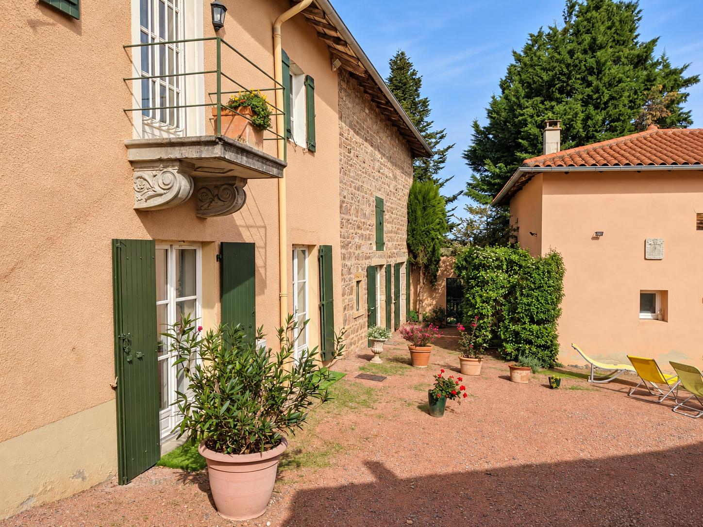
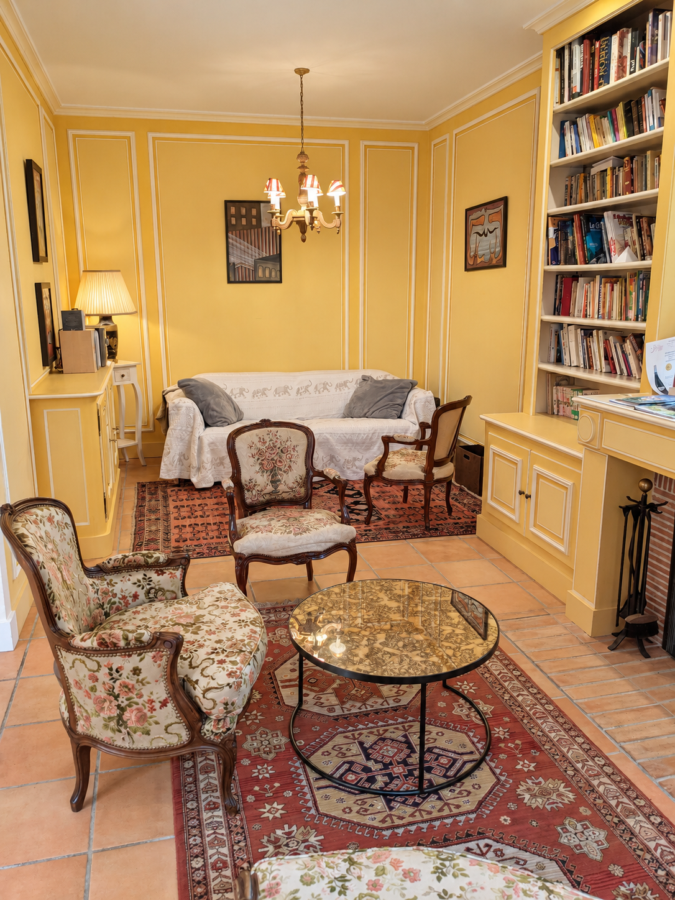
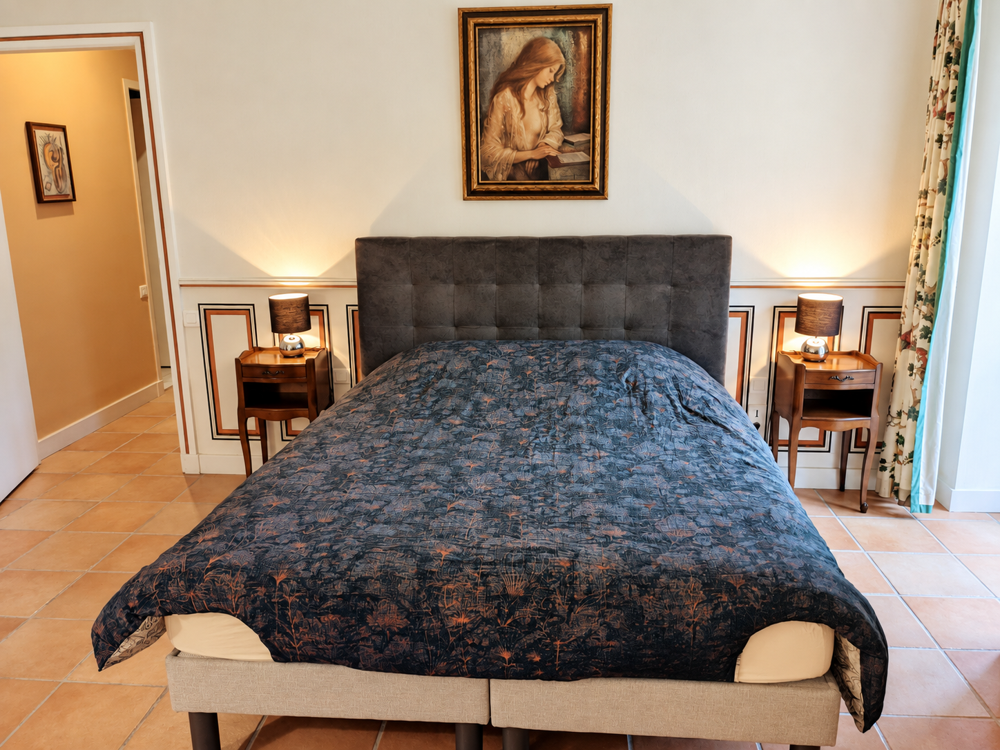
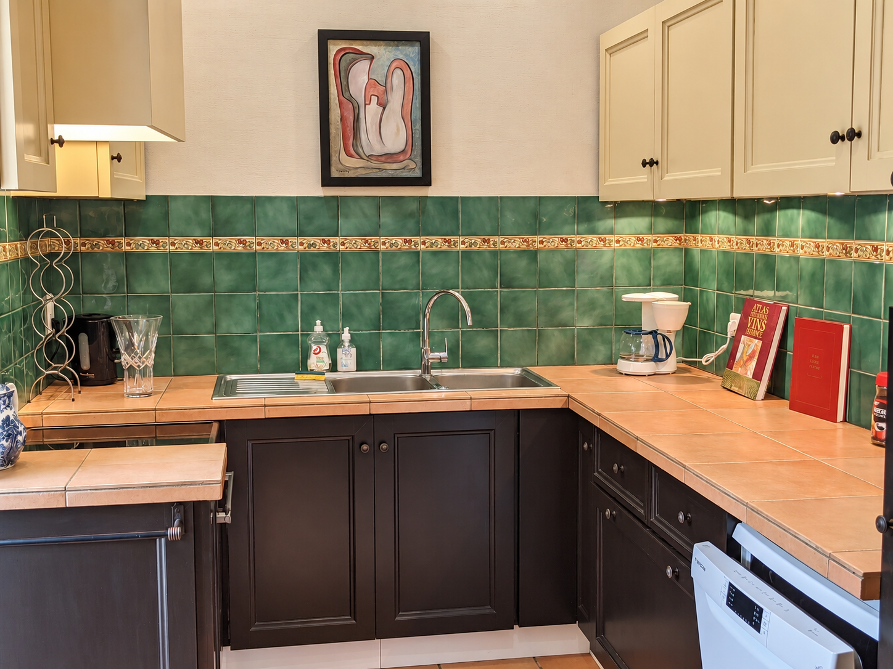
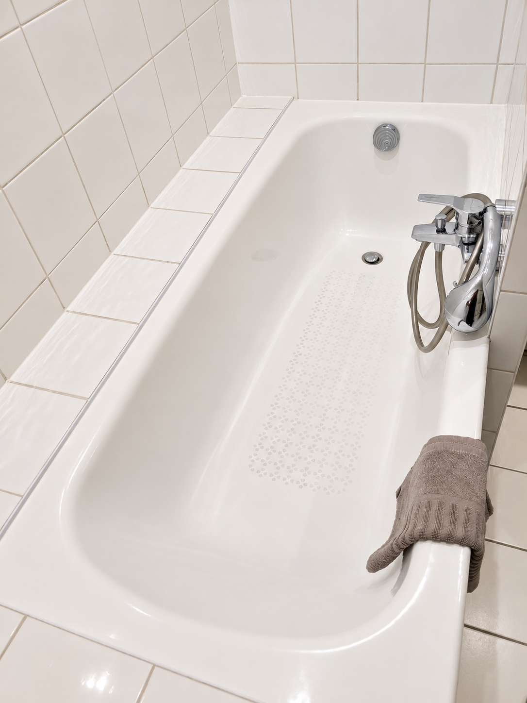
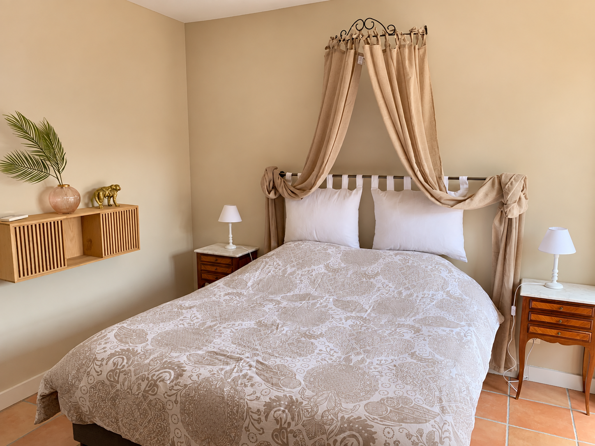
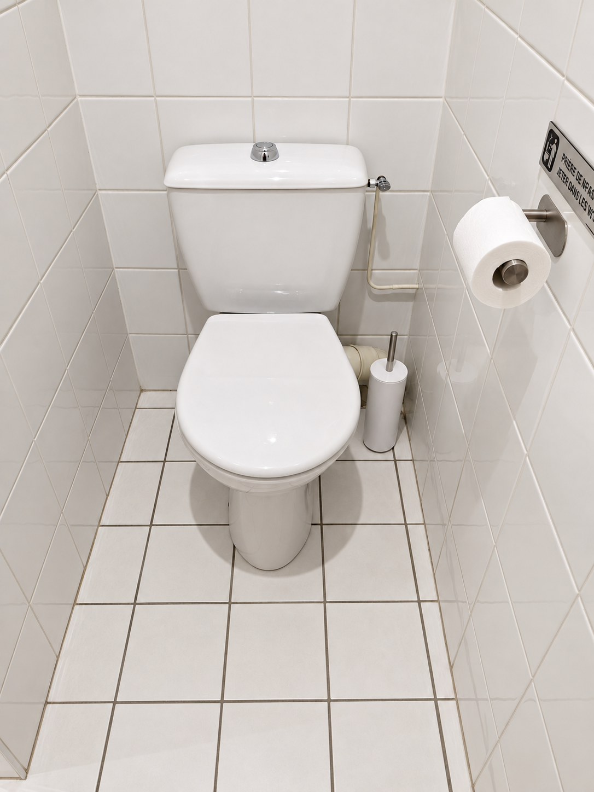

105 m²de plain-pied
Gîte de charme 5 étoiles
au cœur du Beaujolais
Un air de Toscane : une maison de caractère de 105 m², jusqu’à 6 personnes, à Salles-Arbuissonnas-en-Beaujolais, près de Villefranche-sur-Saône.
Jusqu’à 6 personnesadultes et enfants
2 salles de bainset 2 WC
5 étoilesconfort & caractère
Parking privédans la propriété
Le gîte
Un gîte de charme à Salles-Arbuissonnas pour découvrir le Beaujolais
À Salles-Arbuissonnas-en-Beaujolais, dans le Rhône, Un air de Toscane est un gîte 5 étoiles calme et raffiné, inspiré de l’Italie. Sa situation près de Villefranche-sur-Saône en fait un point de départ idéal pour un séjour dans les vignobles du Beaujolais, en couple, entre amis ou en famille.
Le logement est entièrement indépendant et de plain-pied. Il s’ouvre directement sur une cour privative arborée, propice aux repas et aux moments de détente.
L’essentiel2 nuits minimum
Draps et serviettes inclus · Wi‑Fi gratuit · climatisation · cheminée · terrasse privée · barbecue.
Demander un séjour →Visite
Le charme du lieu, pièce par pièce
Découvrez les espaces du gîte, de la cour privative aux chambres et pièces de vie.










Confort
Tout ce qu’il faut pour se sentir chez soi
Les chambres
Chambre Gamay : lit 160 × 200, transformable en 2 lits 80 × 200.
Chambre Le Prieuré : lit 160 × 200.
Salon : canapé convertible haut de gamme 140 × 190.
Les salles de bains
Une salle de bains avec douche et une seconde avec baignoire, chacune avec vasque, sèche-cheveux et sèche-serviettes.
Deux WC.
La cuisine
Réfrigérateur, congélateur, four, micro-ondes, plaques de cuisson, machine à café, bouilloire, grille-pain, lave-vaisselle et ustensiles.
À l’extérieur
Cour et terrasse privées, mobilier de jardin, transats et barbecue. Parking privé et fermé dans la propriété.
Tarifs & disponibilités
Choisissez vos dates
150 € par nuit jusqu’à 4 personnes, pour un séjour de 2 nuits minimum. Au-delà de 4 personnes, ajoutez 15 € par personne supplémentaire et par nuit. Capacité maximale : 6 personnes au total. Taxe de séjour en supplément, à régler sur place. Les animaux de compagnie ne sont pas admis.
Acompte30 %
Caution450 €
Arrivée16h–20h
Départ9h–11h
Taxe de séjourEn supplément
Taxe de séjour en supplément, à régler sur place · ménage à la charge du locataire, sinon 120 € retenus sur la caution · animaux non admis · logement non-fumeur · fêtes non autorisées.
Autour du gîte
Le Beaujolais à votre porte
Vignes, patrimoine, villages de caractère et bonnes tables : le gîte est un point de départ pratique pour découvrir la région.
Salles-Arbuissonnas
Découvrez le village, son prieuré clunisien, son cloître roman, son musée et l'ancien quartier du Chapitre.
Dégustation de vins
Rencontrez les vignerons du secteur et découvrez les crus et appellations du Beaujolais.
Clochemerle
Le célèbre village de Vaux-en-Beaujolais et son caveau, au milieu des paysages viticoles.
Villefranche-sur-Saône
Commerces, marché, musée Paul-Dini et centre historique à quelques minutes en voiture.
Touroparc
Une sortie familiale avec parc zoologique et attractions.
Découvrir Salles et le Beaujolais
90, rue de la Croix-Rousse
69460 Salles-Arbuissonnas-en-Beaujolais
À votre arrivée, passez en voiture sous le porche et garez-vous au fond de la cour.
Ouvrir dans Google MapsQuestions fréquentes
Préparer votre séjour dans le Beaujolais
Où se situe le gîte ?
Un air de Toscane se trouve à Salles-Arbuissonnas-en-Beaujolais, dans le Rhône, à environ 9 km de Villefranche-sur-Saône, au cœur du vignoble beaujolais.
Combien de personnes peuvent séjourner ?
Le gîte accueille jusqu’à 6 personnes au total, adultes et enfants, avec deux chambres et un canapé convertible dans le salon.
Quelle est la durée minimale du séjour ?
La réservation est possible à partir de 2 nuits. Le tarif est de 150 € par nuit jusqu’à 4 personnes, puis 15 € par personne supplémentaire et par nuit.
Le stationnement est-il disponible ?
Oui. Un parking privé et fermé est disponible directement dans la propriété.
Avis voyageurs
9,5 / 10 Exceptionnel
10 / 10« Joli cadre, intérieur chaleureux, literie impeccable, grands placards de rangement, propreté, contacts et accueil au top. »
Réservation directe
Réservez votre séjour
Pas de plateforme intermédiaire ni de commission. Envoyez simplement votre demande ; vous restez en contact direct avec les propriétaires.
06 49 48 60 33Pour une demande particulière sur la durée, les horaires ou l’organisation du séjour, appelez-nous directement.